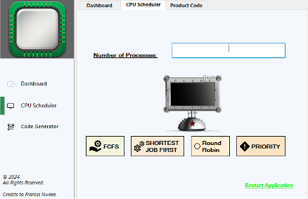

Tool
Tool
iBHAT
Intelligent Interactive Behavioral Health Annotation Tool — ML-powered system for annotating and analyzing behavioral health research data at scale.
PythonML/DLHealthcare AI
[PhD Researcher] Computer Science · KSU
Deep learning and XAI. Backend engineer. Aviation enthusiast.
Building explainable intelligent systems.
Researcher · Engineer · Curious Mind
“I enjoy connecting the connections and seeing the big picture.”
I am Francis Emmanuel Nweke, a PhD student in Computer Science at Kennesaw State University. My research focuses on applying deep learning and machine learning to behavioral and mental health data — building annotation tools, automated pipelines, and intelligent systems that can meaningfully support clinical and research workflows.
Before academia, I spent several years as a backend and database developer, working extensively with MSSQL, C#, Python, and MongoDB. I bring that engineering discipline into my research.
Outside the lab, I follow aviation closely - accident investigation reports, airspace systems, human factors. I also follow soccer (FC Barcelona).
Tools I research with and build with
Where I have been building and learning
Kennesaw State University · Computer Science Dept.
Kennesaw State University
Research: Human-AI Collaboration on Explainable AI · Supervisor: Dr. Khan
Backend & Database Development
Computer Science
Graduated with a strong foundation in algorithms, data structures, software engineering, and systems design.
Research · Software · Tools
Tool
Intelligent Interactive Behavioral Health Annotation Tool — ML-powered system for annotating and analyzing behavioral health research data at scale.
Web application for generating QR codes and barcodes from user-provided text or URLs, with instant preview and download.
Banking application with account management, transaction history, and secure operations built with a robust backend architecture.
Classic Tic Tac Toe game with player vs. player and player vs. AI modes, clean UI, and win detection logic.
Automated detection and classification of letter-based signals from EEG / brain wave data using deep learning models.

ToolVisual simulator for CPU scheduling algorithms — FCFS, SJF, Round Robin, and Priority — with Gantt chart output.
Thoughts on research, aviation, and beyond
An overview of how deep learning models and tools are transforming workflows in behavioral health research, and what challenges remain before these tools reach clinical practice…
There is a surprisingly close relationship between how investigators reconstruct black-box data and how data scientists debug model failures. Both fields study systems under pressure…
Behavioral health research has historically relied on manual annotation — clinicians and trained reviewers spending hours labeling video recordings, audio transcripts, and patient interaction logs. It is painstaking, expensive, and difficult to scale. Deep learning offers a path forward, but the journey from laboratory accuracy to clinical trust is longer than most benchmark papers suggest.
In my own research at KSU, we are building tools that assist — rather than replace — human annotators. The goal of iBHAT (our Intelligent Interactive Behavioral Health Annotation Tool) is not to automate away judgment, but to make the annotation process faster, more consistent, and less fatiguing. Models surface candidate labels; humans confirm, correct, or override them.
The interesting technical challenge is not accuracy on held-out test sets — it is calibration. A model that is 92% accurate but confidently wrong 8% of the time in a clinical setting is potentially more dangerous than a less accurate model that knows what it does not know. Uncertainty quantification in behavioral health annotation is, I believe, the next frontier.
There is also the question of generalization. Behavioral health data is collected in wildly different contexts — structured clinical interviews, naturalistic home settings, telehealth calls. A model trained on one distribution fails silently on another. Domain adaptation and federated learning approaches are promising here, though they introduce their own complexity.
I spend a lot of time reading aviation accident investigation reports — NTSB, AAIB, BEA. Not morbidly, but because these documents are some of the finest examples of systematic causal analysis I have encountered. They take a catastrophic failure and work backwards, layer by layer, until they reach not just the proximate cause but the latent conditions that made failure possible.
The parallels to software systems are immediate. The concept of "swiss cheese" fault models — where each layer of defense has holes, and accidents occur when holes align — maps cleanly onto distributed systems. A production outage is rarely a single bug; it is a chain of decisions, assumptions, and degraded conditions that stack up at the wrong moment.
What aviation does especially well is normalize the acknowledgment of human factors. Pilots are not blamed for following incorrect procedures if the procedures were unclear. Controllers are not blamed for cognitive overload if the system gave them no tools to manage it. This is a maturity that software post-mortems are still working toward — the shift from "who broke it" to "what conditions made it possible to break."
The other lesson is the value of the flight data recorder. Persistent, structured, non-deletable logging of system state is not just useful in hindsight — it changes the design of the system. When you know that every decision and state transition will be reviewed, you design more carefully. More software teams should think about their observability tooling in this light.
Research collaborations, opportunities, or just a hello
Whether you are interested in research collaboration, have an opportunity to discuss, or simply want to connect — my inbox is open.